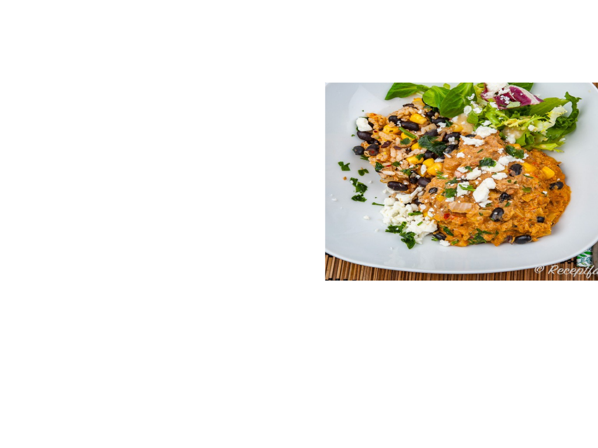

Noels Matsida
Ingridienser:
1 paket veggi torkade sojastrips
0,5 liter grönsaksbuljong
1 rödlök
1 paprika
någon form av exempelvis currymix
1 burk kokosmjölk
salt & peppar
jasmin- eller basmatiris för 4 portioner
1.Du börjar med att förvälla sojastripsen i grönsaksbuljongen
2.Koka upp en halvliter vatten, häll i så mycket grönsaksbuljong som det står på paketet att en halvliter vatten ska ha.
3.Blanda runt lite. kasta sedan ner sojastripsen där i, och låt förvälla i typ 5 min.
4.Som det står på paketet så kramar du sedan ur dom i ett durkslag när de är klara. spara också bujongen som du kramar ur
5. när det i stekpannan ser härligt fräst ut så häller du på burken med kokosmjölk, och lite currymix eller vad du valt att ha i.
6. häll i lite av grönsaksbuljongen om det ser lite väl tjockt ut. salta lite, peppra lite, smaka av med nån annan krydda.
7. servera din goda sojagryta med riset och drick något gott till.
Instruktioner:
Sök
Recepter
Produkter
Om sidan
Mina Recept
